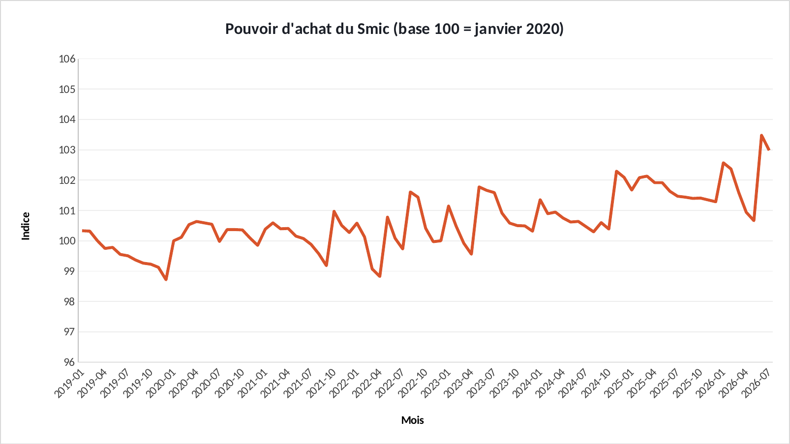

Tuto Excel · 40 min
Refaire les graphiques du projet dans Excel.
« Évolution des prix à la consommation en France » : chaque graphique de l'étude, clic par clic, avec les formules. Ouvrez l'exercice et suivez.
Ce que vous allez pratiquer : rebaser une série à 100 · référence mixte (B$17) · déflater un salaire · courbes sur 91 mois.
00 · Avant de commencerTrois réglages
- Téléchargez le fichier exercice et ouvrez-le dans Excel. Les cellules jaunes sont à remplir, les graphiques sont à construire.
- Le fichier corrigé contient la version finie : c'est de là que viennent les graphiques du site. Ouvrez-le à côté pour comparer.
- Les formules sont écrites pour Excel en français : les arguments sont séparés par
;. En anglais, remplacez;par,et utilisez le nom entre parenthèses. - Recopier une formule vers le bas : sélectionnez la cellule, puis double-cliquez sur le petit carré en bas à droite.
Les couleurs du portfolio : bleu #1F3864, orange #D9542B, gris #8FA0C2. Pour les appliquer : clic droit sur une série → Mettre en forme une série de données → pot de peinture Remplissage et trait → Remplissage uni → Couleur → Autres couleurs → onglet Personnalisées → champ Hex.
01 · Onglet DonneesRebaser les prix à 100 en janvier 2020
Les indices n'ont pas le même point de départ. On les ramène tous à 100 en janvier 2020 (ligne 17, en bleu clair) pour comparer leur évolution.
1.1 La formule
- En F5. Le
$devant 17 bloque la ligne de janvier 2020, mais laisse la colonne libre. - Recopiez vers la droite jusqu'à H5 (alimentation, énergie), puis tout vers le bas jusqu'à la ligne 95.
| Cellule | Formule (Excel en français) | En anglais |
|---|---|---|
| F5 | =B5/B$17*100 | — |
1.2 Le graphique
- A4:A95 + F4:H95 (Ctrl) → Courbes. Axe vertical : minimum 80.
✅ Vérifiez : Ligne 17 : les trois valent 100. En juillet 2026 : global 117,8, alimentation 125,7, énergie 143,3.

Résultat attendu, exporté du fichier corrigé.
02 · Onglet DonneesLe Smic a-t-il suivi les prix ?
Pouvoir d'achat = évolution du Smic divisée par évolution des prix. Au-dessus de 100, le Smic a gagné sur les prix.
2.1 La formule
- En I5, recopiez jusqu'à la ligne 95.
| Cellule | Formule (Excel en français) | En anglais |
|---|---|---|
| I5 | =(E5/E$17)/(B5/B$17)*100 | — |
2.2 Le graphique
- A4:A95 + I4:I95 → Courbes. Axe vertical : de 96 à 106.
✅ Vérifiez : De 100,3 en janvier 2019 à 103,0 en juillet 2026 : le Smic a un peu gagné sur les prix.

Résultat attendu, exporté du fichier corrigé.
BonusExporter un graphique
- Cliquez sur le bord du graphique pour le sélectionner, puis clic droit → Enregistrer en tant qu'image… → format PNG.
- Pour une diapo : clic droit → Copier, puis Collage spécial → Image dans PowerPoint.
BonusLa même chose dans Power BI
Accueil → Obtenir des données → Texte/CSV → choisissez le fichier → délimiteur Point-virgule → Charger.
| Fichier | Visuel | Champs |
|---|---|---|
ipc_smic.csv | Graphique en courbes | Axe X : mois · Axe Y : ipc_global, ipc_alimentation, ipc_energie (rebaser avec une mesure DAX) |
Si les décimales s'affichent mal : Transformer les données → colonne → Type de données → Nombre décimal → Utilisation des paramètres régionaux → Anglais (États-Unis).